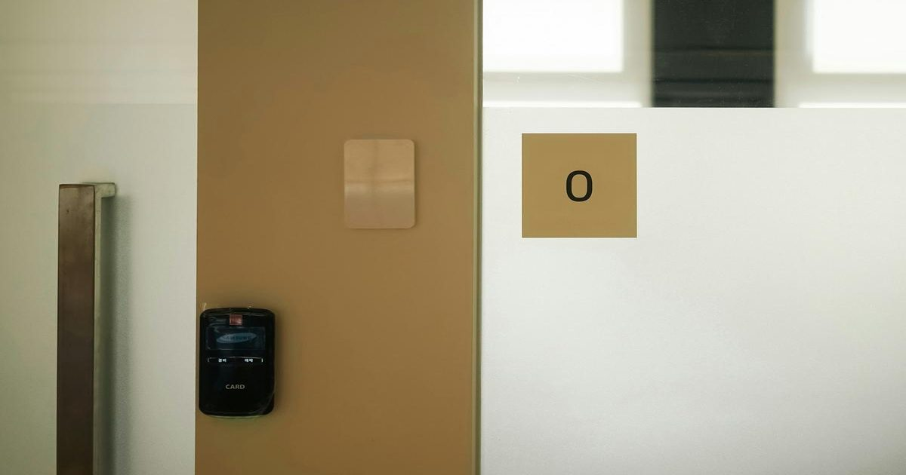

Физика увольнения
Физика дала мне чувство порядка и цели.
Но когда жизнь стала запутанной, я понял, что у нее было гораздо более глубокое понимание - Захаан Бхармал Читать на Aeon

Физика дала мне чувство порядка и цели.
Но когда жизнь стала запутанной, я понял, что у нее было гораздо более глубокое понимание - Захаан Бхармал Читать на Aeon